Local SAPW education, palm decline examples, and protection guidance for Canary Island Date Palms and other high-value palms in North County San Diego.
The South American Palm Weevil, often called SAPW, is an invasive palm pest associated with serious palm decline in Southern California. In the San Diego area, homeowners with large Canary Island Date Palms should pay close attention to crown health, new growth, frond color, and sudden structural changes.
This page is designed to help local homeowners recognize possible warning signs, understand why early assessment matters, and see real-world examples of palm decline observed around North County San Diego.
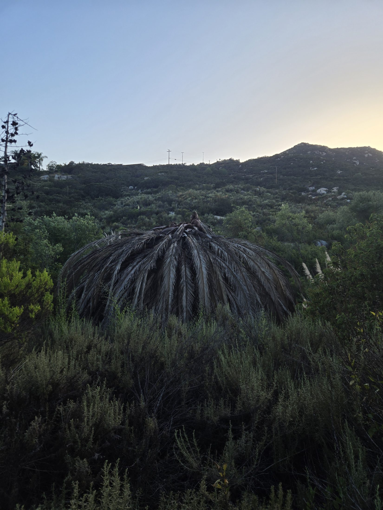
Local Palm Decline Example 1
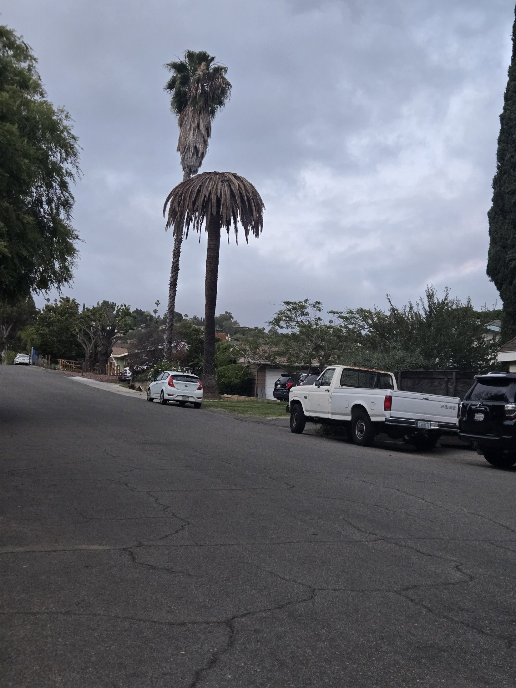
Local Palm Decline Example 2
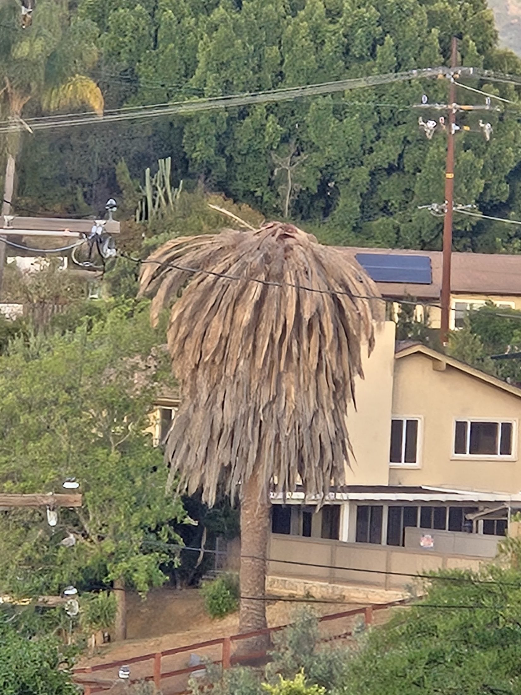
Local Palm Decline Example 3
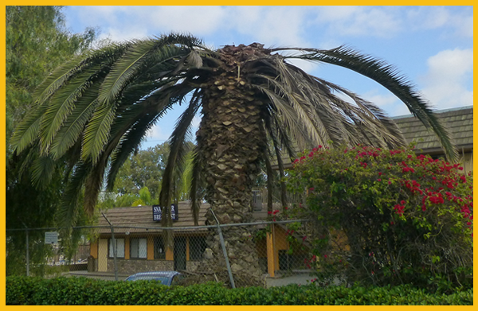
Local Palm Decline Example 4
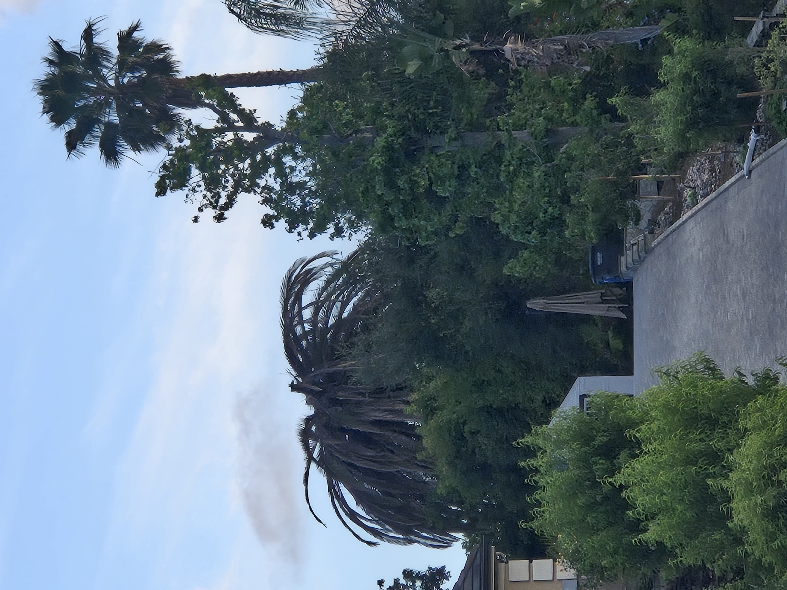
Local Palm Decline Example 5
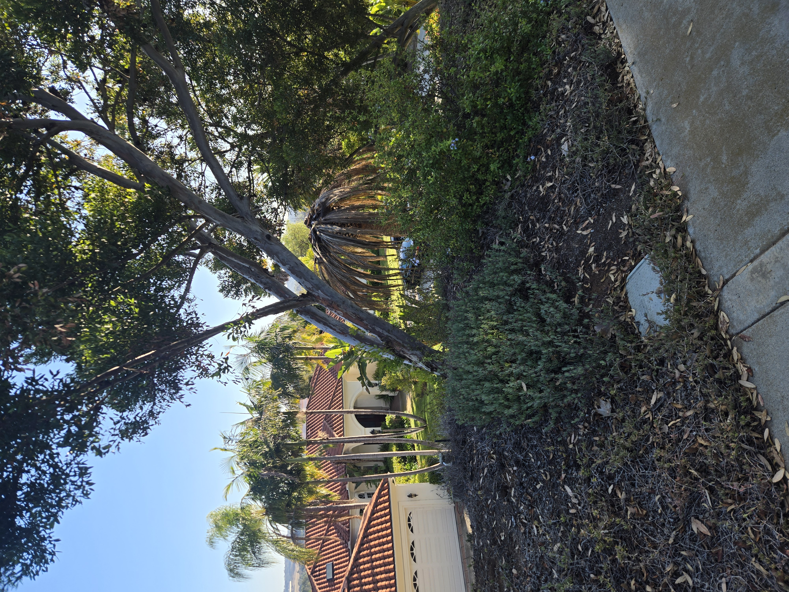
Local Palm Decline Example 6
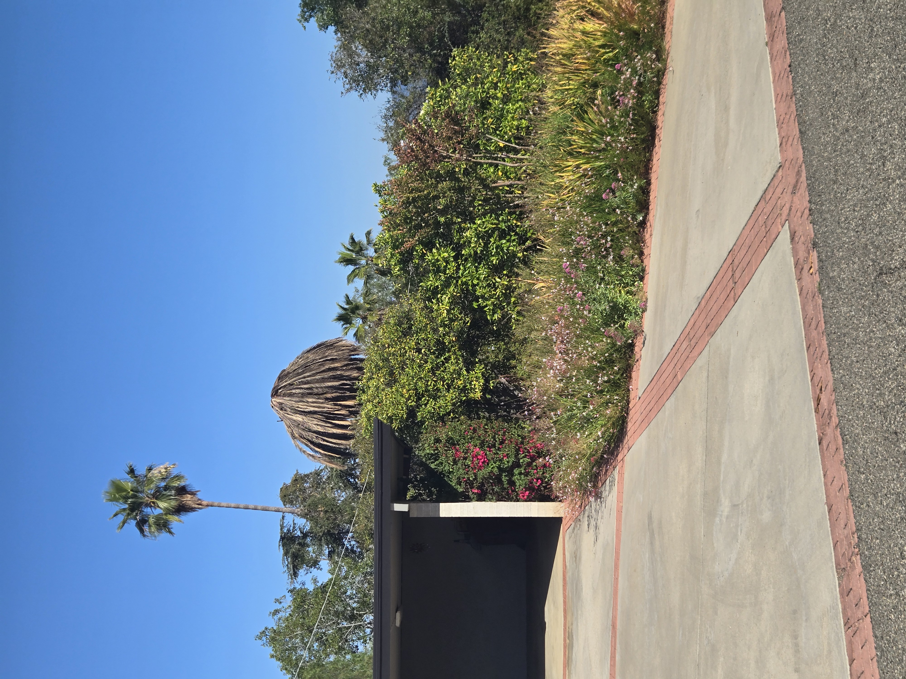
Local Palm Decline Example 7

Local Palm Decline Example 8

Local Palm Decline Example 9

Local Palm Decline Example 10
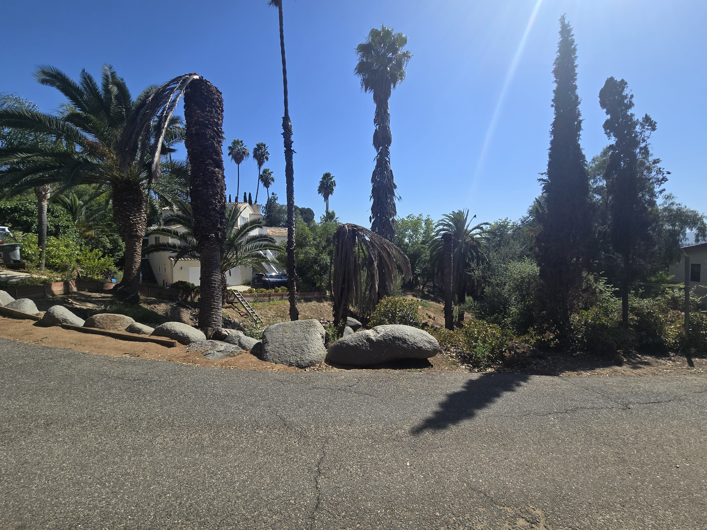
Local Palm Decline Example 11

Local Palm Decline Example 12
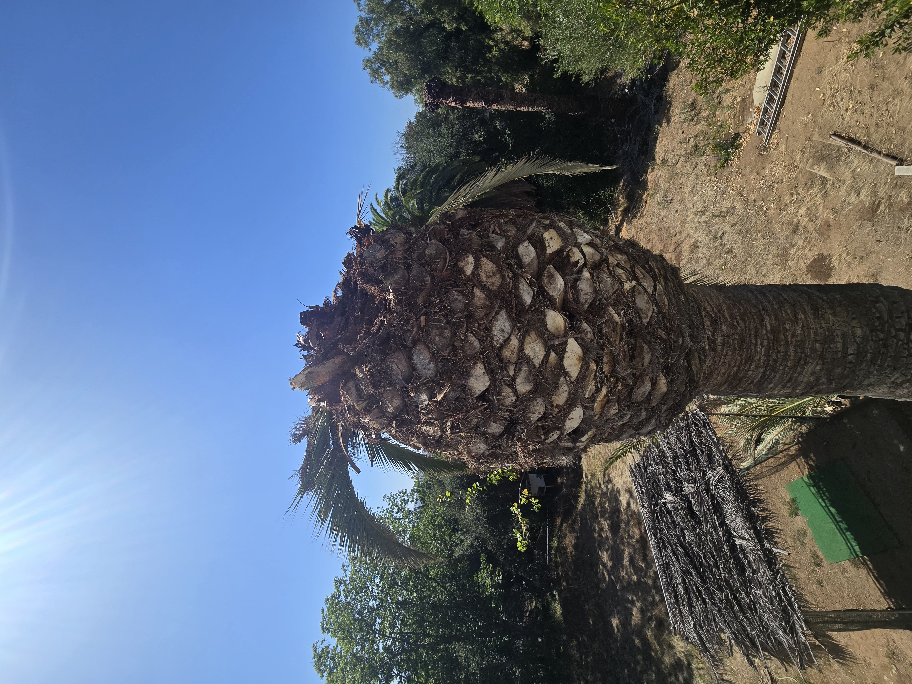
Local Palm Decline Example 13
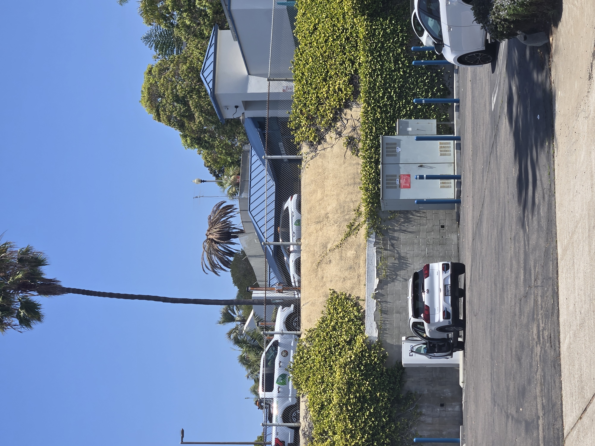
Local Palm Decline Example 14

Local Palm Decline Example 15
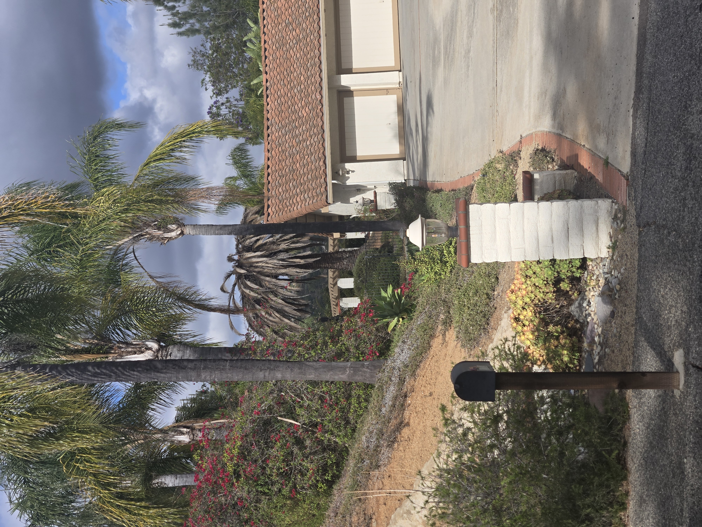
Local Palm Decline Example 16
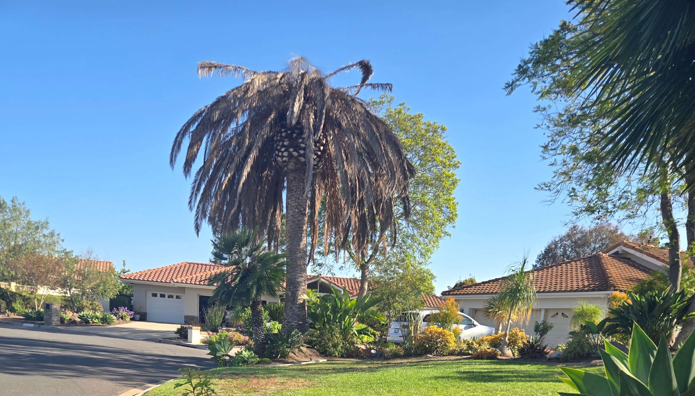
Local Palm Decline Example 17
San Diego Palm Protection helps homeowners evaluate high-value palms, identify visible stress signs, and consider preventive palm health options. The goal is simple: catch problems early, protect valuable palms, and help homeowners avoid preventable losses when warning signs appear.
If your Canary Island Date Palm is showing crown thinning, brown center growth, sudden decline, or nearby palms are failing, it is worth taking a closer look before the damage becomes irreversible.
Text or email photos for a free first look. Include a full photo of the palm, the crown if visible, the trunk, and any areas that look brown, thinning, wet, damaged, or unusual.
📞 Call or Text 262-492-3135